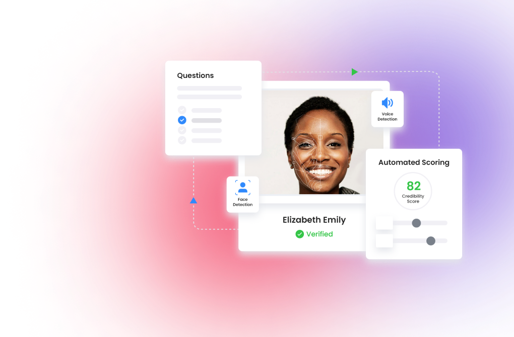
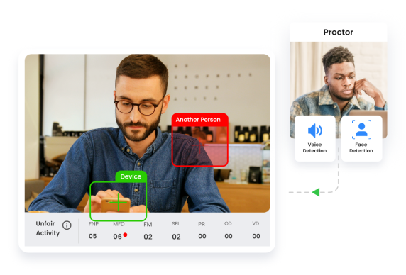
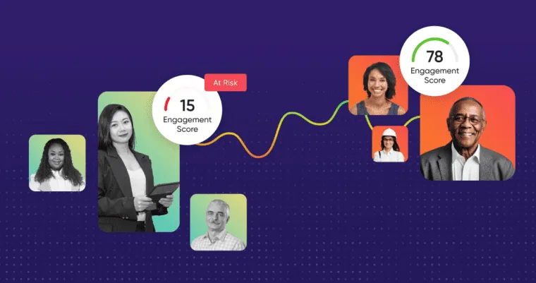
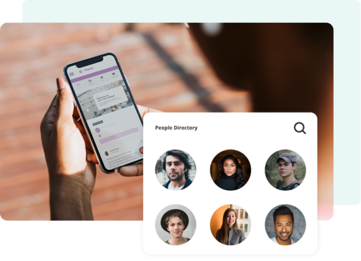
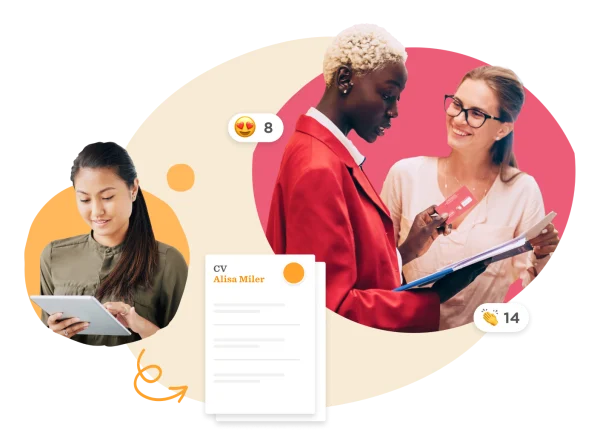

The future of learning is eLearning, the domain that has reached USD$200 billion mark in 2024 and created needs for numerous supporting technologies, including Online Proctoring.
Online Skill Test Proctoring is evolving at a faster pace than anticipated and all thank you(s) goes to the fast emergence of Internet based Learning programs at a global scale. Resear1ch Experts at Brainmeasures.com explore more about online proctoring for skill-assessments through this blog that discusses concerns with non-proctored online skill testing.
Online Skill Assessment is trending globally in varied formats for more than 20 years, while the most adapted online skill test is Multiple Choice Questions (MCQs) that evaluates candidates’ expertise on desired subject matters as well as to assess their behavioral and personality profiles.
First thing First
Before we take a deep-dive in to the main topic, let’s first understand what online proctoring is? For a quick layman understanding, Online Proctoring or Automated Proctored Skill Test is a mechanism that ensures the participants’ authenticity and eliminates probable cheating instances throughout the skill assessment. In an Online Skill Test Proctoring, a proctor connects with the candidate through Internet and monitors the participant’s activities, during the skill test, through webcam, microphone, and screen-access to the participants’ device (Desktop PC/Laptop/Tablet/Mobile Phone).A proctor, however, is a trained and qualified individual who authenticates the participant’s identity and ensures a cheating free skill assessment.


Let’s be Familiar…
What’s Driving the Online Skill-Test Proctoring?
- Propelling demand for e-Learning modules
- Rising focus on eliminating high costs associated with proctored skill-assessment centers
- Growing needs to save recruiters’/trainers’/employers’ time, efforts, and spending
- Scarce availability of skill-testing infrastructure to administer skill-assessments in appropriate environments
- Increasing requirements for on-job learning and developments of the employees
What factors to consider for implementing the desired online proctoring tool?
Quick and Seamless integration with existing Skill Assessment Interface
Brainmeasures empowers test administrators to integrate advanced online proctoring system to any existing skill assessment engine for a seamless experience.
More advancement, more automation, along with more of modern technologies can ensure a more efficient online proctoring mechanism.
Brainmeasures comes with future-ready capabilities, including a most compatible and agile Plug and Play API, high-quality real-time Video and Audio streaming, and much more.
Sturdy Interface is also critical, as online proctoring includes video streaming, desktop sharing, audio feeds, and others, while any technical glitch can affect participants’ performance.
Brainmeasures enables participants to attempt online skill test at multiple internet bandwidth and comes with much faster and ultra-modern platform - Model–View–Controller (MVC), which can support more load.
Excellent reporting capabilities and an advanced efficiency metrics ensure better candidate experience and make the recruiters skill-testing initiative a success.
Brainmeasures advanced automated proctoring system comes with detailed performance reports and smart performance tracking board to encourage candidates' participation and competence.
Let’s Understand the Major Proctoring Formats

Essentially, there are three major variants of online skill-test proctoring:

Remote Online Proctoring
In a remote online proctored skill test, a qualified proctor monitors and analyzes the candidates’ real time audio-video and shared-screen feeds throughout the assessment. The proctor also ensures participant’s authenticity and raises flags for any probable cheating during the test.
The Pluses
Evades location constraints enabling candidates and proctors to connect even from remote geographies.
The Minuses
The system still requires human involvement almost at a similar scale as in offline proctoring and at times it may severely hit the company’s skill assessment budgets.
Pre-Recorded Proctoring
In this method, instead of monitoring the candidates in real time, proctor reviews the participant’s audio-video and shared-screen feeds that are recorded during the assessment. The proctor shall play back the pre-recorded feeds and raise the annotated flags on any suspicious activity.
The Pluses
Evades location constraints enabling candidates and proctors to connect even from remote geographies.
The Minuses
The system still requires human involvement almost at a similar scale as in offline proctoring and at times it may severely hit the company’s skill assessment budgets.
Advanced Automated Online Proctoring
This is the most recent and advanced format of skill test proctoring. In addition to record the candidate’s audio-video and shared-screen, the system automatically analyzes any suspicious activity through integrated advanced video and audio analytics. The platform uses face recognition and face detection capabilities to authenticate the participants.
The mechanism ensures that candidate focuses on test screen throughout the skill assessment, while also checks for desired room light, background voices, and any suspicious objects in recorded videos for raising warnings / flags.
Only the Pluses
The system doesn’t require human proctors to review skill test, thus ensuring cost and time effectiveness.
Brainmeasures Intelligent Automated Online Remote Proctoring platform provides additional security features that are seamlessly integrated and:
- Tracks screen movements to ensure webcam or wear cam were active during the assessment.
- Disables copy-paste keyboard shortcuts to prevent copy and paste of text from other sources.
- Freezes the shared screen of candidate’s device restricting participants from browsing another website, accessing other applications or switching windows
Team Brainmeasures also explored some of the recent trends in the Online Proctoring Space:

Integration of Biometric Inputs in the online proctoring system enables test administrators to seamlessly authenticate the participants’ identity and keep a check on any malpractices during the skill-test.
Facial recognition is also an integrated capability in Brainmeasures Online Proctoring Mechanism that enables recruiters to eliminate any undesired activity during the skill test.
Keyboard Behavior analysis enables skill-test proctors to correctly ascertain the typing patters to validate the candidate’s authenticity throughout the skill-test.
Facial and Position Movement Tracking, Eye-Ball Movement Monitoring, Voice Detection are among the other primary capabilities that empower hiring managers to ensure the authenticity of the skill assessment.
Brainmeasures Automated Proctoring System is already integrated with all these critical features and much more.
How’s the Future Shaping up for Online Proctoring?
Brainmeasures Research Experts reveal that online proctoring tools will continue to provide a strong pedestal for online skill-testing and eLearning programs in the long run, and shall soon be adapted by other forms of assessments as well.
Developers @ Brainmeasures are meticulously working to further enhance the technology capabilities of Brainmeasures’ Automated Proctoring System and make it more sturdy and user-friendly.
Below are some of the unique features that Brainmeasures Developers intend to integrate to the Brainmeasures Automated Online Proctoring Platform in near terms:
Voice Tone Analysis
Facial Expressions Monitoring
Sound Recognition
Touch-Screen Behavior Analysis
Illumination Analysis
Remote Video Proctoring Mobile App, as the front camera on the Mobile Devices will make online skill-tests as fool-proof as web-based skill assessments, enabling test administrators to integrate minimal checks and procedures.